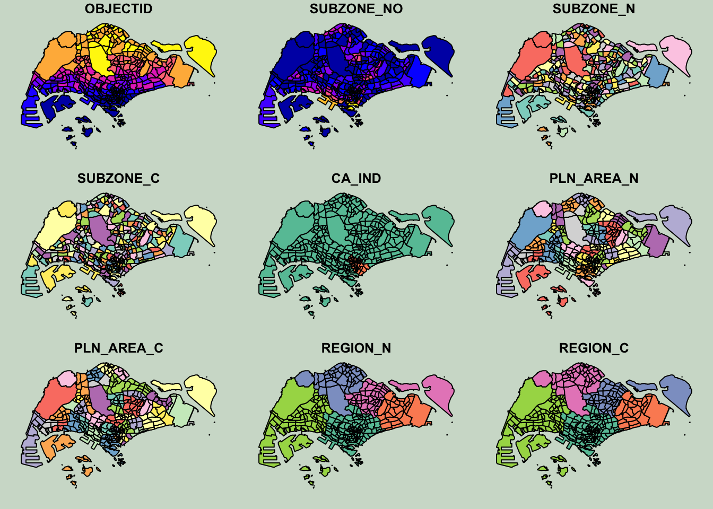
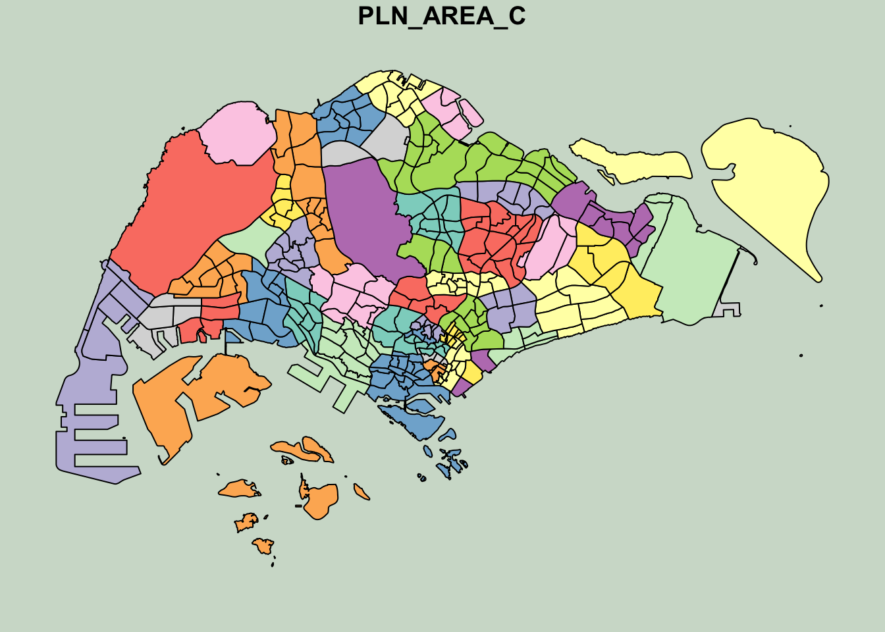
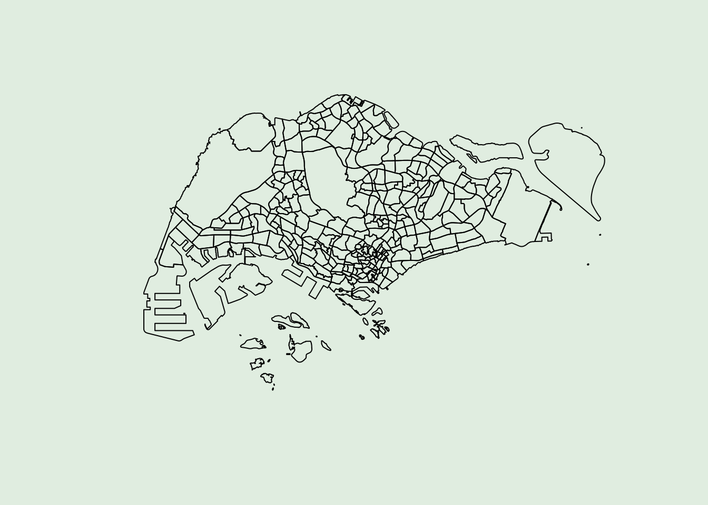
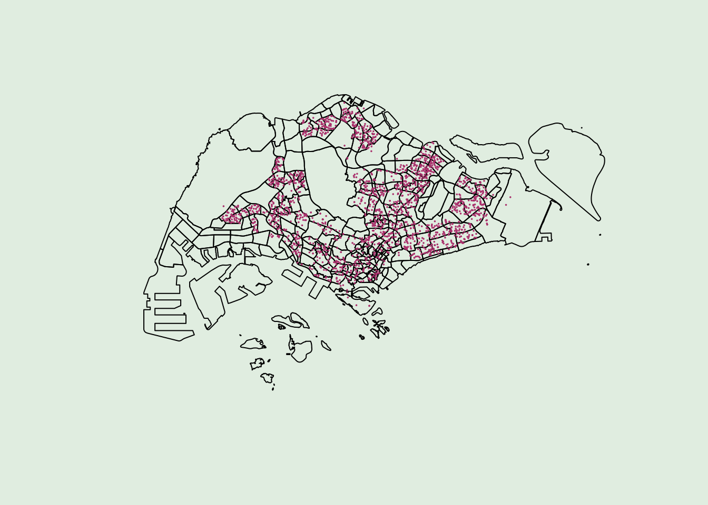
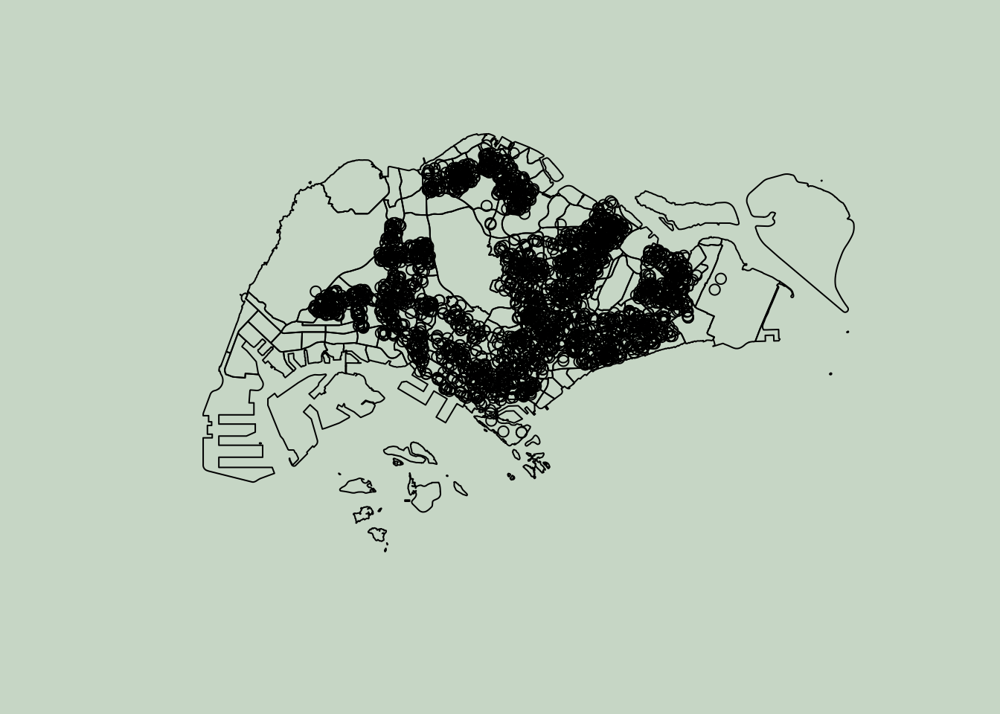
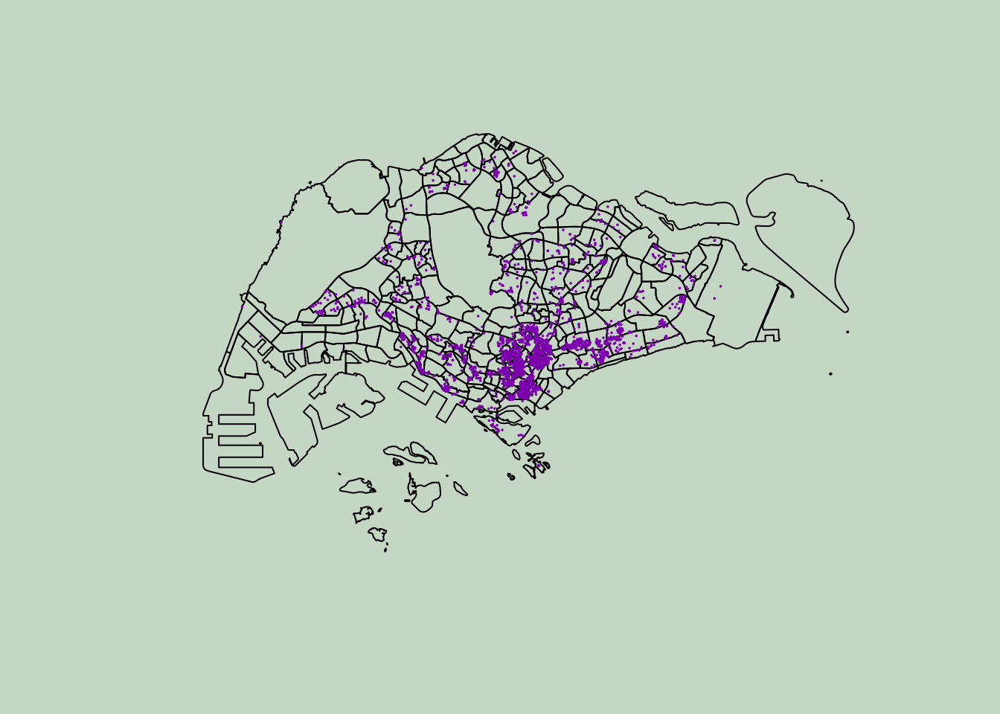
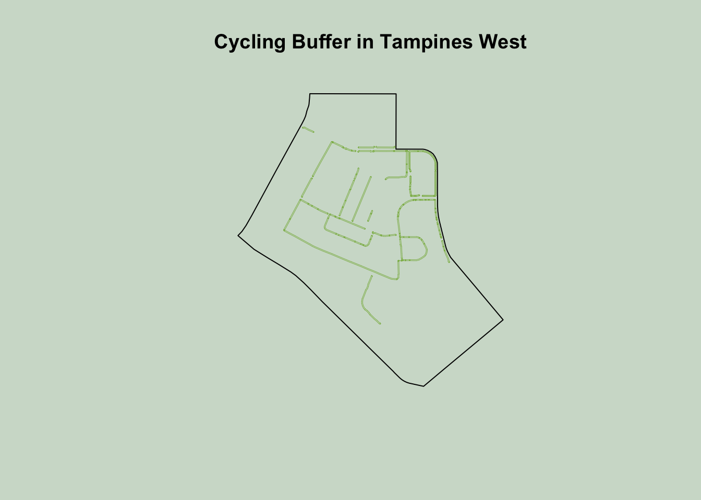
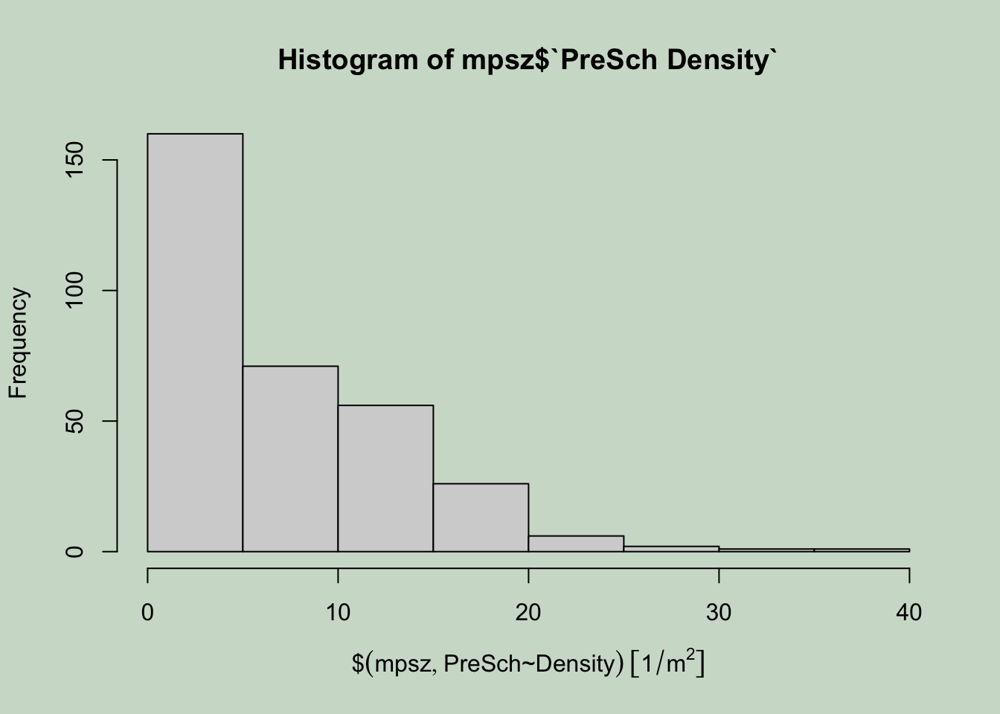
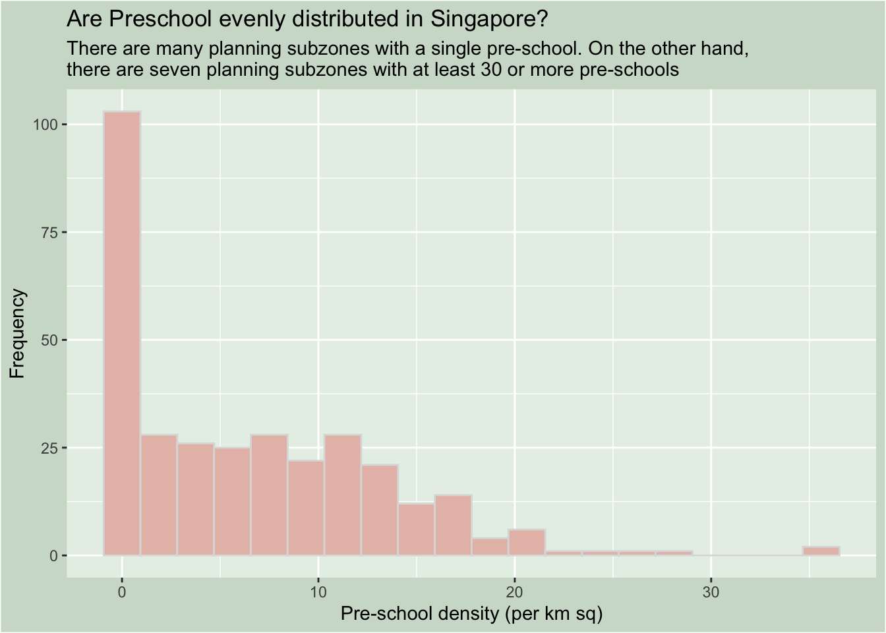
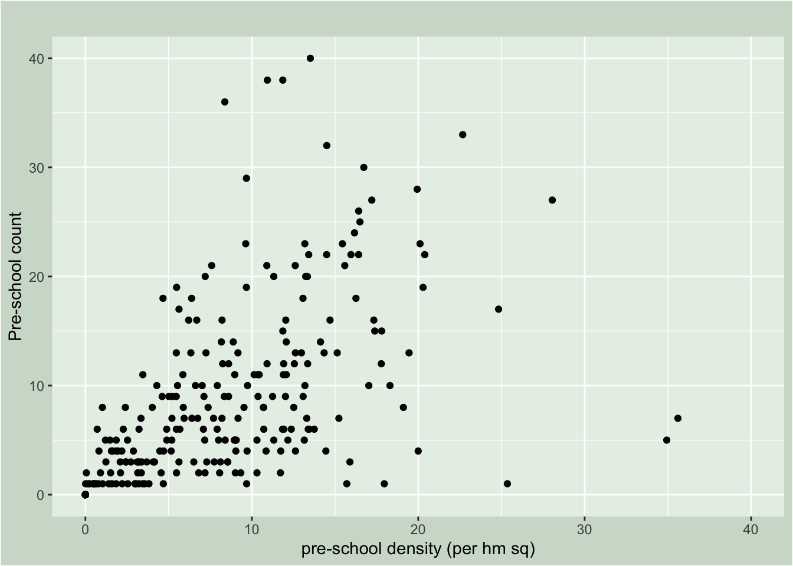

pacman::p_load(sf, tidyverse)01a - Geospatial Data Science with R
Hands-on 01 Overview
1.1 Objectives
In this exercise, we will learn how to perform geospatial data science tasks in R by using sf package.
We aim to achieve the following competencies:
- installing and loading sf and tidyverse packages into R environment;
- importing geospatial data by using appropriate functions of sf package;
- importing aspatial data by using appropriate function of readr package;
- exploring the content of simple feature data frame by using appropriate Base R and sf functions;
- assigning or transforming coordinate systems by using using appropriate sf functions;
- converting an aspatial data into a sf data frame by using appropriate function of sf package;
- performing geoprocessing tasks by using appropriate functions of sf package;
- performing data wrangling tasks by using appropriate functions of dplyr package and
- performing Exploratory Data Analysis (EDA) by using appropriate functions from ggplot2 package.
1.2 Data Acquisition
We will extract data sets for this exercise from the following sources:
- Master Plan 2014 Subzone Boundary (Web) from data.gov.sg
- Pre-Schools Location from data.gov.sg
- Cycling Path from LTADataMall
- Latest version of Singapore Airbnb listing data from Inside Airbnb
1.2.1 Extracting the geospatial data sets
In the Hands-on_Ex01 folder, we create a sub-folder called data and 2 data sub-folders as geospatial and aspatial respectively. Then, we place Master Plan 2014 Subzone Boundary (Web), Pre-Schools Location and Cycling Path zipped files into geospatial sub-folder and unzipped them. Copy the unzipped files from their respective sub-folders and place them inside geospatial sub-folder.
1.2.2 Extracting the aspatial data set
Here we will extract the downloaded listing data file. Cut and paste listing.csv into aspatialsub-folder.
1.3 Getting Started
Two R packages are used in this exercise:
- sf for importing, managing, and processing geospatial data.
- tidyverse for performing data science tasks such as importing, wrangling and visualising data.
The following packages from the Tidyverse package will be used.
- readr for importing csv data,
- tidyr for manipulating data,
- dplyr for transforming data, and
- ggplot2 for visualising data
pacman must be installed. We will use the code below to load the necessary R packages into R.
We learn from the code above:
p_load function of pacman is used to install and load sf and tidyverse packages into R.
1.4 Importing Geospatial Data
We will learn how to import the following geospatial data into R by using st_read() of sf package:
MP14_SUBZONE_WEB_PL, a polygon feature layer in ESRI shapefile format,CyclingPath, a line feature layer in ESRI shapefile format,PreSchool, a point feature layer in kml file format.
1.4.1 Importing polygon feature data in shapefile format
The code chunk below uses st_read() function of sf package to import MP14_SUBZONE_WEB_PL shapefile into R as a polygon feature data frame.
Note
- when the input geospatial data is in shapefile format, two arguments will be used, namely:
dsnto define the data path andlayerto provide the shapefile name. - no extension such as .shp, .dbf, .prj and .shx are needed.
mpsz = st_read(dsn = "data/geospatial",
layer = "MP14_SUBZONE_WEB_PL")Reading layer `MP14_SUBZONE_WEB_PL' from data source
`/Users/cathyc/Documents/cathyschu/ISSS626GEO/Hands-on_Ex/Hands-on_Ex01/data/geospatial'
using driver `ESRI Shapefile'
Simple feature collection with 323 features and 15 fields
Geometry type: MULTIPOLYGON
Dimension: XY
Bounding box: xmin: 2667.538 ymin: 15748.72 xmax: 56396.44 ymax: 50256.33
Projected CRS: SVY21Learning
- The geospatial objects are multipolygon features.
- There are a total of 323 multipolygon features and 15 fields in
mpszsimple feature data frame.mpszis in svy21 projected coordinates systems. - The bounding box provides the x extend and y extend of the data.
1.4.2 Importing polyline feature data in shapefile form
Now we use st_read() function of sf package to import CyclingPath shapefile into R as line feature data frame.
cyclingpath = st_read(dsn = "data/geospatial",
layer = "CyclingPathGazette")Reading layer `CyclingPathGazette' from data source
`/Users/cathyc/Documents/cathyschu/ISSS626GEO/Hands-on_Ex/Hands-on_Ex01/data/geospatial'
using driver `ESRI Shapefile'
Simple feature collection with 4651 features and 19 fields
Geometry type: MULTILINESTRING
Dimension: XY
Bounding box: xmin: 11721.1 ymin: 27550.13 xmax: 42809.37 ymax: 49702.59
Projected CRS: SVY21Learning
- There are a total of 4651 features and 19 fields in
cyclingpathsf data frame. - The geospatial entities are capture in multilinestring object.
- Similar to the MP19_SUBZONE_WEB_PL shape file, this data set is in in svy21 projected coordinates system too.
1.4.3 Importing GIS data in kml format
The PreSchoolsLocation is in kml format. The code chunk below will be used to import the kml into R.
preschool = st_read("data/geospatial/PreSchoolsLocation.kml")Reading layer `PRESCHOOLS_LOCATION' from data source
`/Users/cathyc/Documents/cathyschu/ISSS626GEO/Hands-on_Ex/Hands-on_Ex01/data/geospatial/PreSchoolsLocation.kml'
using driver `KML'
Simple feature collection with 2290 features and 2 fields
Geometry type: POINT
Dimension: XYZ
Bounding box: xmin: 103.6878 ymin: 1.247759 xmax: 103.9897 ymax: 1.462134
z_range: zmin: 0 zmax: 0
Geodetic CRS: WGS 84Learning
preschoolis a point feature data frame.- There are a total of 2290 features and 2 fields.
- Different from the previous two simple feature data frame, preschool is in wgs84 coordinates system.
1.5 Checking the Content of A Simple Feature Data Frame
Prior to wrangle the geospatial data, we should know more about the data sets first.
1.5.1 Working with st_geometry()
The column in the sf data.frame that contains the geometries is a list of class sfc. We can retrieve the geometry list-column in this case by mpsz$geom or mpsz[[1]], but the more general way uses st_geometry() as shown in the code chunk below.
st_geometry(mpsz)Geometry set for 323 features
Geometry type: MULTIPOLYGON
Dimension: XY
Bounding box: xmin: 2667.538 ymin: 15748.72 xmax: 56396.44 ymax: 50256.33
Projected CRS: SVY21
First 5 geometries:Note
The print only displays basic information of the feature class such as type of geometry, the geographic extent of the features and the coordinate system of the data.
1.5.2 Working with glimpse()
We would like to learn more about the associated attribute information in the data frame, besides the feature information. We will use glimpse() of dplyr in the code chunk below.
glimpse(mpsz)Rows: 323
Columns: 16
$ OBJECTID <int> 1, 2, 3, 4, 5, 6, 7, 8, 9, 10, 11, 12, 13, 14, 15, 16, 17, …
$ SUBZONE_NO <int> 1, 1, 3, 8, 3, 7, 9, 2, 13, 7, 12, 6, 1, 5, 1, 1, 3, 2, 2, …
$ SUBZONE_N <chr> "MARINA SOUTH", "PEARL'S HILL", "BOAT QUAY", "HENDERSON HIL…
$ SUBZONE_C <chr> "MSSZ01", "OTSZ01", "SRSZ03", "BMSZ08", "BMSZ03", "BMSZ07",…
$ CA_IND <chr> "Y", "Y", "Y", "N", "N", "N", "N", "Y", "N", "N", "N", "N",…
$ PLN_AREA_N <chr> "MARINA SOUTH", "OUTRAM", "SINGAPORE RIVER", "BUKIT MERAH",…
$ PLN_AREA_C <chr> "MS", "OT", "SR", "BM", "BM", "BM", "BM", "SR", "QT", "QT",…
$ REGION_N <chr> "CENTRAL REGION", "CENTRAL REGION", "CENTRAL REGION", "CENT…
$ REGION_C <chr> "CR", "CR", "CR", "CR", "CR", "CR", "CR", "CR", "CR", "CR",…
$ INC_CRC <chr> "5ED7EB253F99252E", "8C7149B9EB32EEFC", "C35FEFF02B13E0E5",…
$ FMEL_UPD_D <date> 2014-12-05, 2014-12-05, 2014-12-05, 2014-12-05, 2014-12-05…
$ X_ADDR <dbl> 31595.84, 28679.06, 29654.96, 26782.83, 26201.96, 25358.82,…
$ Y_ADDR <dbl> 29220.19, 29782.05, 29974.66, 29933.77, 30005.70, 29991.38,…
$ SHAPE_Leng <dbl> 5267.381, 3506.107, 1740.926, 3313.625, 2825.594, 4428.913,…
$ SHAPE_Area <dbl> 1630379.27, 559816.25, 160807.50, 595428.89, 387429.44, 103…
$ geometry <MULTIPOLYGON [m]> MULTIPOLYGON (((31495.56 30..., MULTIPOLYGON (…glimpse() report reveals the data type of each fields. For example, FMEL-UPD_D field is in date data type and X_ADDR, Y_ADDR, SHAPE_L and SHAPE_AREA fields are all in double-precision values.
1.5.3 Working with head()
When we want to reveal complete information of a feature object, we can use head() of Base R.
head(mpsz, n = 5)Simple feature collection with 5 features and 15 fields
Geometry type: MULTIPOLYGON
Dimension: XY
Bounding box: xmin: 25867.68 ymin: 28369.47 xmax: 32362.39 ymax: 30435.54
Projected CRS: SVY21
OBJECTID SUBZONE_NO SUBZONE_N SUBZONE_C CA_IND PLN_AREA_N
1 1 1 MARINA SOUTH MSSZ01 Y MARINA SOUTH
2 2 1 PEARL'S HILL OTSZ01 Y OUTRAM
3 3 3 BOAT QUAY SRSZ03 Y SINGAPORE RIVER
4 4 8 HENDERSON HILL BMSZ08 N BUKIT MERAH
5 5 3 REDHILL BMSZ03 N BUKIT MERAH
PLN_AREA_C REGION_N REGION_C INC_CRC FMEL_UPD_D X_ADDR
1 MS CENTRAL REGION CR 5ED7EB253F99252E 2014-12-05 31595.84
2 OT CENTRAL REGION CR 8C7149B9EB32EEFC 2014-12-05 28679.06
3 SR CENTRAL REGION CR C35FEFF02B13E0E5 2014-12-05 29654.96
4 BM CENTRAL REGION CR 3775D82C5DDBEFBD 2014-12-05 26782.83
5 BM CENTRAL REGION CR 85D9ABEF0A40678F 2014-12-05 26201.96
Y_ADDR SHAPE_Leng SHAPE_Area geometry
1 29220.19 5267.381 1630379.3 MULTIPOLYGON (((31495.56 30...
2 29782.05 3506.107 559816.2 MULTIPOLYGON (((29092.28 30...
3 29974.66 1740.926 160807.5 MULTIPOLYGON (((29932.33 29...
4 29933.77 3313.625 595428.9 MULTIPOLYGON (((27131.28 30...
5 30005.70 2825.594 387429.4 MULTIPOLYGON (((26451.03 30...Note
One of the useful argument of head() is it allows user to select the numbers of record to display (i.e. the n argument).
1.6 Plotting the Geospatial Data
In geospatial data science, by looking at the feature information is not enough. We are also interested to visualise the geospatial features. This is the time we use plot() of R Graphic in the code chunk below to achieve this.
par(bg = "#D0DDD0")
plot(mpsz)
The default plot of an sf object is a multi-plot of all attributes, up to a reasonable maximum as shown above. We can, however, choose to plot only the geometry by using the code chunk below.
par(bg = "#e6f0e6")
plot(st_geometry(mpsz))
Alternatively, we can also choose to plot the sf object by using a specific attribute as shown in the code chunk below.
par(bg = "#D0DDD0")
plot(mpsz["PLN_AREA_C"])
Note
plot() is appropriate for plotting the geospatial object for quick look. For high cartographic quality map, other R package such as tmap should be used.
Next, we will plot the preschool layer on top of the mpsz layer by using the code chunk below.
par(bg = "#e6f0e6")
plot(st_geometry(mpsz))
plot(st_geometry(preschool), add = TRUE)
Learning
In this plot, it has failed to plot on top of the mpsz layer. It is because mpsz is in svy21 and preschool is in wgs84. We need to transform preschool to match the SVY21 coordinate system.
par(bg = "#e6f0e6")
preschool_svy21 <- st_transform(preschool, 3414)
plot(st_geometry(mpsz))
plot(st_geometry(preschool_svy21), add = TRUE, col = "#BA487F", pch = 16, cex = 0.25)
1.7 Working with Projection
Map projection is an important property of a geospatial data. In order to perform geoprocessing using two geospatial data, we need to ensure that both geospatial data are projected using similar coordinate system.
In this section, we will project a simple feature data frame from one coordinate system to another coordinate system. The technical term of this process is called projection transformation.
1.7.1 Assigning EPSG code to a simple feature data frame
One of the common issue that can happen during importing geospatial data into R is that the coordinate system of the source data was either missing (such as due to missing .proj for ESRI shapefile) or wrongly assigned during the importing process.
Below is an example the coordinate system of mpsz simple feature data frame by using st_crs() of sf package.
st_crs(mpsz)Coordinate Reference System:
User input: SVY21
wkt:
PROJCRS["SVY21",
BASEGEOGCRS["SVY21[WGS84]",
DATUM["World Geodetic System 1984",
ELLIPSOID["WGS 84",6378137,298.257223563,
LENGTHUNIT["metre",1]],
ID["EPSG",6326]],
PRIMEM["Greenwich",0,
ANGLEUNIT["Degree",0.0174532925199433]]],
CONVERSION["unnamed",
METHOD["Transverse Mercator",
ID["EPSG",9807]],
PARAMETER["Latitude of natural origin",1.36666666666667,
ANGLEUNIT["Degree",0.0174532925199433],
ID["EPSG",8801]],
PARAMETER["Longitude of natural origin",103.833333333333,
ANGLEUNIT["Degree",0.0174532925199433],
ID["EPSG",8802]],
PARAMETER["Scale factor at natural origin",1,
SCALEUNIT["unity",1],
ID["EPSG",8805]],
PARAMETER["False easting",28001.642,
LENGTHUNIT["metre",1],
ID["EPSG",8806]],
PARAMETER["False northing",38744.572,
LENGTHUNIT["metre",1],
ID["EPSG",8807]]],
CS[Cartesian,2],
AXIS["(E)",east,
ORDER[1],
LENGTHUNIT["metre",1,
ID["EPSG",9001]]],
AXIS["(N)",north,
ORDER[2],
LENGTHUNIT["metre",1,
ID["EPSG",9001]]]]Although mpsz data frame is projected in svy21 but when we read until the end of the print, it indicates that the EPSG is 9001. The correct EPSG code for svy21 should be 3414.
In order to assign the correct EPSG code to mpsz data frame, st_set_crs() of sf package is used as shown in the code chunk below.
mpsz <- st_set_crs(mpsz, 3414)Now, let us check the CSR again by using the code chunk below.
st_crs(mpsz)Coordinate Reference System:
User input: EPSG:3414
wkt:
PROJCRS["SVY21 / Singapore TM",
BASEGEOGCRS["SVY21",
DATUM["SVY21",
ELLIPSOID["WGS 84",6378137,298.257223563,
LENGTHUNIT["metre",1]]],
PRIMEM["Greenwich",0,
ANGLEUNIT["degree",0.0174532925199433]],
ID["EPSG",4757]],
CONVERSION["Singapore Transverse Mercator",
METHOD["Transverse Mercator",
ID["EPSG",9807]],
PARAMETER["Latitude of natural origin",1.36666666666667,
ANGLEUNIT["degree",0.0174532925199433],
ID["EPSG",8801]],
PARAMETER["Longitude of natural origin",103.833333333333,
ANGLEUNIT["degree",0.0174532925199433],
ID["EPSG",8802]],
PARAMETER["Scale factor at natural origin",1,
SCALEUNIT["unity",1],
ID["EPSG",8805]],
PARAMETER["False easting",28001.642,
LENGTHUNIT["metre",1],
ID["EPSG",8806]],
PARAMETER["False northing",38744.572,
LENGTHUNIT["metre",1],
ID["EPSG",8807]]],
CS[Cartesian,2],
AXIS["northing (N)",north,
ORDER[1],
LENGTHUNIT["metre",1]],
AXIS["easting (E)",east,
ORDER[2],
LENGTHUNIT["metre",1]],
USAGE[
SCOPE["Cadastre, engineering survey, topographic mapping."],
AREA["Singapore - onshore and offshore."],
BBOX[1.13,103.59,1.47,104.07]],
ID["EPSG",3414]]The EPSG code is now 3414.
1.7.2 Transforming the projection of preschool from wgs84 to svy21
In geospatial analytics, it is very common for us to transform the original data from geographic coordinate system to projected coordinate system. This is because geographic coordinate system is not appropriate if the analysis need to use distance or/and area measurements.
Let us take preschool simple feature data frame as an example. The print below reveals that it is in wgs84 coordinate system.
st_geometry(preschool)Geometry set for 2290 features
Geometry type: POINT
Dimension: XYZ
Bounding box: xmin: 103.6878 ymin: 1.247759 xmax: 103.9897 ymax: 1.462134
z_range: zmin: 0 zmax: 0
Geodetic CRS: WGS 84
First 5 geometries:This is a scenario that st_set_crs() is not appropriate and st_transform() of sf package should be used. We need to reproject preschool from one coordinate system to another coordinate system mathemetically.
Below is how we transform projection using st_transform()
preschool <- st_transform(preschool, crs = 3414)Note
In practice, we need to find out the appropriate project coordinate system to use before performing the projection transformation.
Below we will see the content of preschool sf data frame.
st_geometry(preschool)Geometry set for 2290 features
Geometry type: POINT
Dimension: XYZ
Bounding box: xmin: 11810.03 ymin: 25596.33 xmax: 45404.24 ymax: 49300.88
z_range: zmin: 0 zmax: 0
Projected CRS: SVY21 / Singapore TM
First 5 geometries:Note
- It is in svy21 projected coordinate system now.
- Refer to Bounding box: the values are greater than 0-360 range of decimal degree commonly used by most of the geographic coordinate systems.
Next we will plot the preschool layer on top of mpsz layer again.
par(bg = "#D0DDD0")
plot(st_geometry(mpsz))
plot(st_geometry(preschool), add = TRUE)
Now the display of map is what we wanted.
1.8 Importing and Converting An Aspatial Data
In practice, it is not unusual that we come across data such as listing of Inside Airbnb. We call this kind of data aspatial data. It is not a geospatial data but among the data fields, there are two fields that capture the x- and y-coordinates of the data points.
In this section, we will import an aspatial data into R environment and save it as a tibble data frame. Next, we will convert it into a simple feature data frame.
For the purpose of this exercise, the listings.csv data downloaded from AirBnb will be used.
1.8.1 Importing the aspatial data
Since listings data set is in csv file format, we will use read_csv() of readr package to import listing.csv. The output R object is called listings and it is a tibble data frame.
listings <- read_csv("data/aspatial/listings.csv")After importing the data file into R, it is important for us to examine if the data file has been imported correctly.
The code chunk below uses list() of Base R instead of glimpse().
list(listings)[[1]]
# A tibble: 3,659 × 18
id name host_id host_name neighbourhood_group neighbourhood latitude
<dbl> <chr> <dbl> <chr> <chr> <chr> <dbl>
1 71609 Ensuite … 367042 Belinda East Region Tampines 1.35
2 71896 B&B Roo… 367042 Belinda East Region Tampines 1.35
3 71903 Room 2-n… 367042 Belinda East Region Tampines 1.35
4 275343 10min wa… 1439258 Kay Central Region Bukit Merah 1.29
5 275344 15 mins … 1439258 Kay Central Region Bukit Merah 1.29
6 294281 5 mins w… 1521514 Elizabeth Central Region Newton 1.31
7 324945 Comforta… 1439258 Kay Central Region Bukit Merah 1.29
8 330095 Relaxing… 1439258 Kay Central Region Bukit Merah 1.29
9 344803 Budget s… 367042 Belinda East Region Tampines 1.35
10 369141 5mins fr… 1521514 Elizabeth Central Region Newton 1.31
# ℹ 3,649 more rows
# ℹ 11 more variables: longitude <dbl>, room_type <chr>, price <dbl>,
# minimum_nights <dbl>, number_of_reviews <dbl>, last_review <date>,
# reviews_per_month <dbl>, calculated_host_listings_count <dbl>,
# availability_365 <dbl>, number_of_reviews_ltm <dbl>, license <chr>The output reveals that listing tibble data frame consists of 3659 rows and 18 columns. Two useful fields we are going to use in the next phase are latitude and longitude.
Note that they are in decimal degree format. As a best guess, we will assume that the data is in wgs84 Geographic Coordinate System.
1.8.2 Creating a simple feature data frame from an aspatial data frame
The code chunk below converts listing data frame into a simple feature data frame by using st_as_sf() of sf packages.
listings_sf <- st_as_sf(listings,
coords = c("longitude", "latitude"),
crs = 4326) %>%
st_transform(crs = 3414)Learning
- coords argument requires you to provide the column name of the x-coordinates first then followed by the column name of the y-coordinates.
- crs argument requires you to provide the coordinates system in epsg format. EPSG: 4326 is wgs84 Geographic Coordinate System and EPSG: 3414 is Singapore SVY21 Projected Coordinate System.
We can search for other country’s epsg code by referring to epsg.io. - %>% is used to nest st_transform() to transform the newly created simple feature data frame into svy21 projected coordinates system.
Let us examine the content of this newly created simple feature data frame.
glimpse(listings_sf)Rows: 3,659
Columns: 17
$ id <dbl> 71609, 71896, 71903, 275343, 275344, 29…
$ name <chr> "Ensuite Room (Room 1 & 2) near EXPO", …
$ host_id <dbl> 367042, 367042, 367042, 1439258, 143925…
$ host_name <chr> "Belinda", "Belinda", "Belinda", "Kay",…
$ neighbourhood_group <chr> "East Region", "East Region", "East Reg…
$ neighbourhood <chr> "Tampines", "Tampines", "Tampines", "Bu…
$ room_type <chr> "Private room", "Private room", "Privat…
$ price <dbl> 143, NA, 76, NA, NA, 85, NA, NA, 41, 79…
$ minimum_nights <dbl> 92, 92, 92, 180, 180, 92, 180, 180, 92,…
$ number_of_reviews <dbl> 19, 24, 46, 20, 16, 131, 17, 5, 60, 81,…
$ last_review <date> 2020-01-17, 2019-10-13, 2020-01-09, 20…
$ reviews_per_month <dbl> 0.12, 0.14, 0.27, 0.13, 0.10, 0.80, 0.1…
$ calculated_host_listings_count <dbl> 5, 5, 5, 58, 58, 7, 58, 58, 5, 7, 7, 1,…
$ availability_365 <dbl> 90, 79, 90, 153, 153, 365, 153, 153, 36…
$ number_of_reviews_ltm <dbl> 0, 0, 0, 0, 0, 0, 0, 0, 0, 0, 0, 0, 1, …
$ license <chr> NA, NA, NA, "S0399", "S0399", NA, "S039…
$ geometry <POINT [m]> POINT (41972.5 36390.05), POINT (…Table above shows the content of listing_sf.
Notice that a new column called geometry has been added into the data frame. On the other hand, the longitude and latitude columns have been dropped from the data frame.
DIY: Using the method you learned earlier, plot listing_sf layer on top of mpsz layer.
par(bg = "#D0DDD0")
plot(st_geometry(mpsz))
plot(st_geometry(listings_sf), add = TRUE, col = "#9112BC", pch = 16, cex = 0.25)
1.9 Geoprocessing with sf package
Besides providing functions to handling geospatial data (i.e. importing, exporting, assigning projection, transforming projection etc.), sf package also offers a wide range of geoprocessing (also known as GIS analysis) functions.
In this section, we will answer GIS questions by using geoprocessing functions of sf package.
1.9.1 Use case 1: Land acquisition analysis
1.9.1.1 The scenario
The authority is planning to upgrade the exiting cycling path. To do so, they need to acquire 5 metres of reserved land on the both sides of the existing cycling path. You are tasked to determine the extend of the land need to be acquired and their total area.
1.9.1.2 The solution
Method 1
- st_buffer() of sf package is used to compute the 5-meter buffers around cycling paths. Then, calculate the area of the buffers.
cyclingpath <- st_transform(cyclingpath, crs = 3414)
buffer_cycling <- st_buffer(cyclingpath,
dist = 5, nQuadSegs = 30) %>%
mutate(AREA = st_area(geometry))- Lastly,
sum()of Base R will be used to derive the total land involved
sum(buffer_cycling$AREA)3561648 [m^2]Method 2 Create a plot showing the buffer by a selected planning subzone
Assuming that we are interested on the land acquisition in Tampines West planning subzone.
filter()of dplyr package will be used to extract polygon feature of Tampines West by using the code chunk below.
mpsz_selected <- mpsz %>%
filter(SUBZONE_N == "TAMPINES WEST")st_intersection()of sf package will be used to clip cycling buffers within Tampines West planning subzone.
buffer_cycling_selected <- st_intersection(
st_geometry(buffer_cycling),
st_geometry(mpsz_selected)
)
plot(st_geometry(mpsz_selected),main = "Cycling Buffer in Tampines West")
plot(st_geometry(buffer_cycling_selected),
col=NA, border ="#8EB859", lwd = 0.5,
add = TRUE)
1.9.2 Use case 2: To determine the number of pre-schools by planning subzone
1.9.2.1 The scenario
The authority requires a count of pre-schools for each planning subzone to support forward planning. Using R and the sf package, perform the necessary geoprocessing to compute these counts and present the results clearly.
1.9.2.2 The solution
The code chunk below performs two operations at one go. Firstly, identify pre-schools located inside each Planning Subzone by using st_intersects(). Next, length() of Base R is used to calculate numbers of pre-schools that fall inside each planning subzone.
mpsz$`PreSch Count` <- lengths(st_intersects(mpsz, preschool))Note
st_intersects() is different from st_intersection().
We can check the summary statistics of the newly derived PreSch Count field by using summary() as shown in the code chunk below.
summary(mpsz$`PreSch Count`) Min. 1st Qu. Median Mean 3rd Qu. Max.
0.00 0.00 4.00 7.09 10.00 72.00 To list the planning subzone with the most number of pre-school, the top_n() of dplyr package is used as shown in the code chunk below.
top_n(mpsz, 1, `PreSch Count`)Simple feature collection with 1 feature and 16 fields
Geometry type: MULTIPOLYGON
Dimension: XY
Bounding box: xmin: 39655.33 ymin: 35966 xmax: 42940.57 ymax: 38622.37
Projected CRS: SVY21 / Singapore TM
OBJECTID SUBZONE_NO SUBZONE_N SUBZONE_C CA_IND PLN_AREA_N PLN_AREA_C
1 189 2 TAMPINES EAST TMSZ02 N TAMPINES TM
REGION_N REGION_C INC_CRC FMEL_UPD_D X_ADDR Y_ADDR SHAPE_Leng
1 EAST REGION ER 21658EAAF84F4D8D 2014-12-05 41122.55 37392.39 10180.62
SHAPE_Area geometry PreSch Count
1 4339824 MULTIPOLYGON (((42196.76 38... 72In the code chunk below, another geoprocessing function of sf package called st_area() is used to derive the area of each planning subzone.
mpsz$Area <- mpsz %>%
st_area()Next, mutate() of dplyr package is used to compute the density.
mpsz <- mpsz %>%
mutate(`PreSch Density` = `PreSch Count`/Area * 1000000)In this section, we will visualise the derive variables by using appropriate Exploratory data Analysis methods of ggplot2.
Firstly, we will plot a histogram to reveal the distribution of PreSch Density. Conventionally, hist() of R Graphics will be used as shown in the code chunk below.
We will also use ggplot2 functions to plot the histogram to reveal more details.
par(bg = "#D0DDD0")
hist(mpsz$`PreSch Density`)
ggplot(data = mpsz,
aes(x = as.numeric(`PreSch Density`))) +
geom_histogram(bins = 20,
color = "#DCDCDC",
fill = "#E5BEB5") +
labs(title = "Are Preschool evenly distributed in Singapore?",
subtitle = "There are many planning subzones with a single pre-school. On the other hand, \nthere are seven planning subzones with at least 30 or more pre-schools",
x = "Pre-school density (per km sq)",
y = "Frequency") +
theme(panel.background = element_rect(fill = "#e6f0e6"),
plot.background = element_rect(fill = "#D0DDD0"))
Now we will plot a scatterplot to show the relationahip between Pre-School Density and pre-school Count.
ggplot(data = mpsz,
aes(y = `PreSch Count`,
x = as.numeric(`PreSch Density`))) +
geom_point(color = "black",
fill = "lightblue") +
xlim(0, 40) +
ylim(0, 40) +
labs(title = "",
x = "pre-school density (per hm sq)",
y = "Pre-school count") +
theme(panel.background = element_rect(fill = "#e6f0e6"),
plot.background = element_rect(fill = "#D0DDD0"))